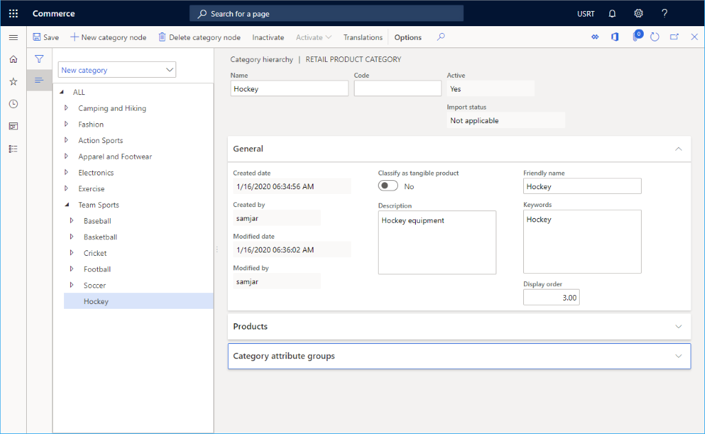

Create a variant group
This topic describes how to create a size, style, or color variant group for a product in Microsoft Dynamics 365 Commerce.
Overview
Dynamics 365 Commerce supports multiple variants for products. It is ideal to set up variant groups for different product categories. For example, a size group can be created for t-shirts with sizes extra small, small, medium, large, and extra large, or a color group could be created to include all available colors of a product. Variant groups should be added before products are added.
In this topic, a size group will be created and configured. Similar procedures can be used for adding and configuring style groups and color groups.
Create a size group
To create a size group, follow these steps.
- In the navigation pane, go to Modules > Retail and commerce > Products and categories > Variant groups > Size groups.
- On the action pane, select New.
- In the Size group box, enter a name for the size group.
- In the Description box, enter an appropriate description.
- On the action pane, select Save.
Add attributes to the size group
To add attributes to a size group, follow these steps.
- In the navigation pane, go to Modules > Retail and commerce > Products and categories > Variant groups > Size groups
- In the navigation pane, select a size group.
- Under Size group lines, select Add.
- In the Size box, enter a string representing the size (for example, "XL").
- In the Size name box, enter a name for the size (for example, "Extra Large").
- In the Replenishment weight box, enter a number representing the replenishment weight.
- In the Number in bar code box, enter a number representing the bar code.
- In the Display order box, enter a number representing the display order.
- When finished adding sizes, select Save on the action pane.
The following image shows an example of a size group for "casual shirt sizes".
